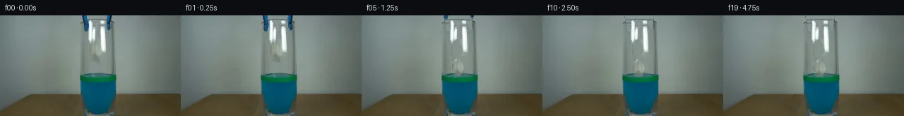

![首帧]()

Round 00
2026-11-05T15:03:12.948897+00:00像素候选变化代码 +267/−0inspection 更新
pixels 1fb0c00deda47751 · code 9e422e59cd083d5c
查看本轮 generate.py 真实 diff
--- previous/generate.py
+++ current/generate.py
@@ -0,0 +1,267 @@
+"""Local source-pixel animation; no external models, engines, or image viewers."""
+from pathlib import Path
+import json
+import numpy as np
+from PIL import Image, ImageDraw
+from scipy.ndimage import gaussian_filter, map_coordinates
+from artifact_io import save
+
+ROOT = Path(__file__).resolve().parent
+SOURCE = np.asarray(Image.open(ROOT / 'first_frame.png').convert('RGB')).copy()
+H, W = SOURCE.shape[:2]
+Y, X = np.mgrid[:H, :W].astype(np.float64)
+ORIGINAL = SOURCE.astype(np.float64)
+
+
+def polygon_matte(points, oversample=8):
+ im = Image.new('L', (W * oversample, H * oversample))
+ ImageDraw.Draw(im).polygon([(round(x * oversample), round(y * oversample)) for x, y in points], fill=255)
+ return np.asarray(im.resize((W, H), Image.Resampling.LANCZOS), dtype=float) / 255
+
+
+def arm_matte(side):
+ if side == 'left':
+ rows = [0, 5, 10, 16, 20, 22, 23.5]
+ centers = [119.5, 120.3, 121.6, 122.2, 122.2, 122.1, 122.3]
+ widths = [3.7, 3.5, 4.0, 4.1, 3.9, 2.4, 0.0]
+ else:
+ rows = [0, 5, 10, 16, 19, 21, 22.5]
+ centers = [154.6, 153.6, 153.0, 153.5, 153.9, 153.4, 153.4]
+ widths = [3.4, 3.3, 3.3, 3.4, 2.6, 1.9, 0.0]
+ c = np.interp(Y, rows, centers)
+ half = np.interp(Y, rows, widths)
+ shape = np.clip(half + 0.45 - np.abs(X-c), 0, 1)
+ shape[Y > rows[-1]] = 0
+ # Remove unchanged gray glass from this manually delimited tool silhouette.
+ r, g, b = ORIGINAL.transpose(2, 0, 1)
+ blue = np.clip((b - r - 5) / 28, 0, 1) * np.clip((b-g-2)/10, 0, 1)
+ black = np.clip((126-r)/55, 0, 1) * np.clip((135-g)/45, 0, 1)
+ coverage = np.maximum(blue, black)
+ return shape * coverage
+
+
+LEFT = arm_matte('left')
+RIGHT = arm_matte('right')
+TOOL = np.maximum(LEFT, RIGHT)
+
+# Recover the underlying gray glass from horizontal samples on both sides.
+# The untouched near-white streaks and the visible rim remain source pixels.
+BACKDROP = ORIGINAL.copy()
+for y in range(25):
+ for xa, xb in [(115, 131), (148, 158)]:
+ if xa == 115:
+ c0 = ORIGINAL[y, 114]
+ c1 = ORIGINAL[y, 135]
+ else:
+ c0 = ORIGINAL[y, 139]
+ c1 = ORIGINAL[y, 163]
+ for x in range(xa, xb + 1):
+ q = (x-xa)/(xb-xa)
+ BACKDROP[y, x] = (1-q)*c0 + q*c1
+# The top rim is partly occluded by the tool; extrapolate its shallow ellipse.
+for y in range(3, 12):
+ ellipse_y = 5.05 + 4.35 * (1-np.sqrt(np.maximum(0, 1-((X[y]-137.8)/24.8)**2)))
+ top_edge = np.exp(-0.5*((y-ellipse_y)/0.62)**2)
+ valid = (X[y] > 114) & (X[y] < 162)
+ a = top_edge * valid * .38
+ BACKDROP[y] = BACKDROP[y]*(1-a[:, None]) + np.array([71, 86, 85])*a[:, None]
+
+BASE = ORIGINAL*(1-TOOL[..., None]) + BACKDROP*TOOL[..., None]
+
+PAPER = polygon_matte([
+ (133.7, 34.3), (138.0, 35.5), (140.0, 39.0), (141.6, 42.3),
+ (143.0, 48.0), (143.0, 53.0), (140.0, 57.0), (140.6, 61.5),
+ (138.7, 66.3), (136.3, 67.2), (132.5, 63.0), (131.0, 57.0),
+ (128.1, 53.5), (127.0, 48.6), (128.1, 43.0), (129.6, 38.1)
+])
+# A saturated glass highlight is an optical foreground layer, not paper texture.
+GLARE = np.clip((ORIGINAL[..., 0]-169)/32, 0, 1)
+GLARE *= (Y < 54) & (((X < 132) & (Y < 42)) | (X > 142))
+PAPER *= (1-GLARE)
+PAPER[PAPER < .008] = 0
+
+CLEAN_PAPER = ORIGINAL.copy()
+for y in range(33, 70):
+ # Values just outside the object are gray transmitted background.
+ l = ORIGINAL[y, 123]
+ r = ORIGINAL[y, 151]
… diff truncated; 180 more lines …